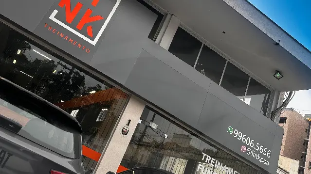

Treino metabólico
Formato voltado ao condicionamento. A equipe orienta como começar a partir do seu nível.
Tristeza · Porto Alegre
Treinamento funcional personalizado. Conheça os formatos de aula e converse com a equipe para começar.
Agendar primeira visitaAs aulas
Formato voltado ao condicionamento. A equipe orienta como começar a partir do seu nível.
Combina exercícios de força e condicionamento. Consulte os horários disponíveis para esse formato.
Primeira visita
Combine o horário antes de vir. Se você usa Wellhub, informe no contato.
Av. Otto Niemeyer, 857 · Tristeza
Combinar horário Abrir rota ↗